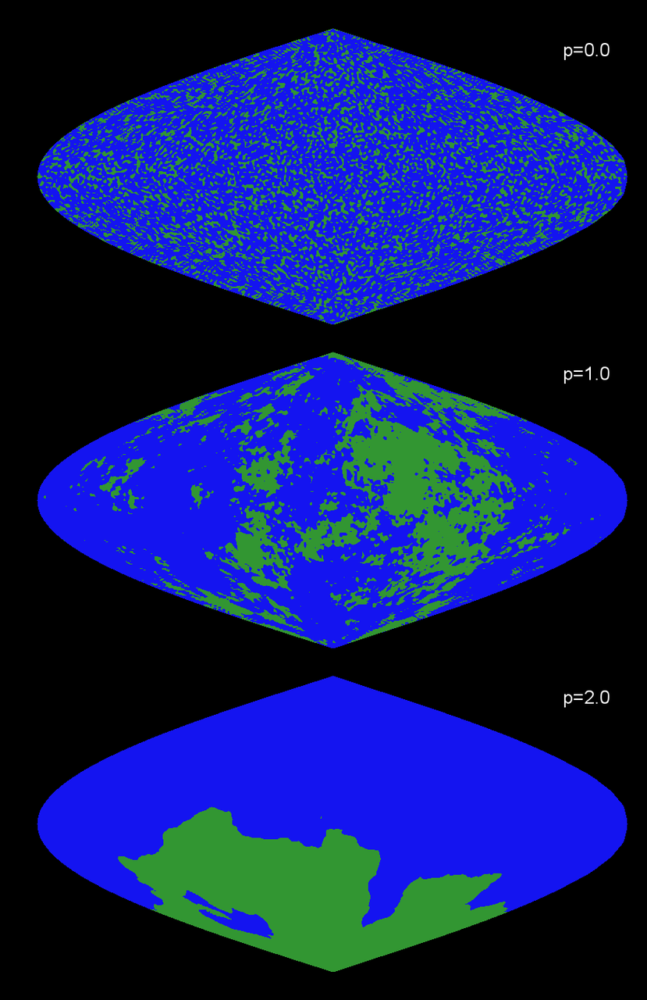
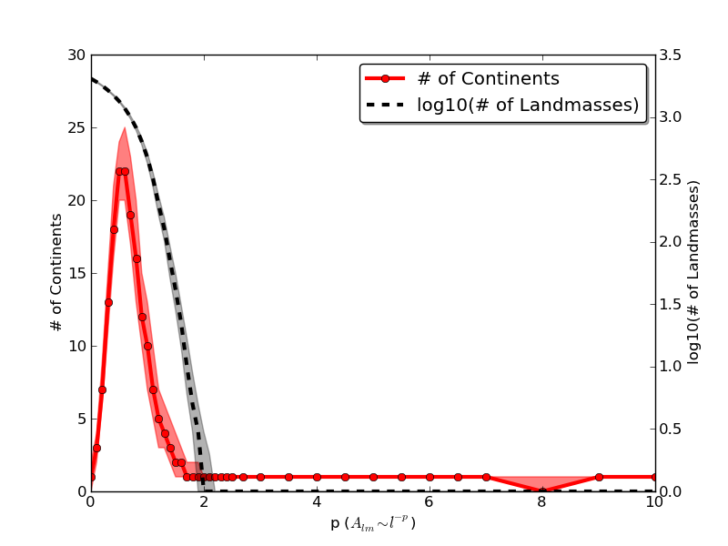

Creating an Earth
A while ago I decided I wanted to create something that looks like the surface of a planet, complete with continents & oceans and all. Since I've only been on a small handful of planets, I decided that I'd approximate this by creating something like the Earth on the computer (without cheating and just copying the real Earth). Where should I start? Well, let's see what the facts we know about the Earth tell us about how to create a new planet on the computer.
Observation 1: Looking at a map of the Earth, we only see the heights of the surface. So let's describe just the heights of the Earth's surface.
Observation 2: The Earth is a sphere. So (wait for it) we need to describe the height on a spherical surface. Now we can recast our problem of making an Earth more precisely mathematically. We want to know the heights of the planet's surface at each point on the Earth. So we're looking for field (the height of the planet) defined on the surface of a sphere (the different spots on the planet). Just like a function on the real line can be expanded in terms of its Fourier components, almost any function on the surface of a sphere can be expanded as a sum of spherical harmonics $Y_{lm}$. This means we can write the height $h$ of our planets surfaces as
$$ h(\theta, \phi) = \sum A_{lm}Y_l^m(\theta, \phi) \quad (1) $$
If we figure out what the coefficients $A$ of the sum should be, then we can start making some Earths! Let's see if we can use some other facts about the Earth's surface to get get a handle on what coefficients to use.
Observation 3: I don't know every detail of the Earth's surface, whose history is impossibly complicated. I'll capture this lack-of-knowledge by describing the surface of our imaginary planet as some sort of random variable. Equation (1) suggests that we can do this by making the coefficients $A$ random variables. At some point we need to make an executive decision on what type of random variable we'll use. For various reasons,[1] I decided I'd use a Gaussian random variable with mean 0 and standard deviation $a_{lm}$:
$$ A_{lm} = a_{lm} N(0,1) $$
(Here I'm using the notation that $N(m,v)$ is a normal or Gaussian random variable with mean $m$ and variance $v$. If you multiply a Gaussian random variable by a constant $a$, it's the same as multiplying the variance by $a^2$, so $a N(0,1)$ and $N(0,a^2)$ are the same thing.)
Observation 4: The heights of the surface of the Earth are more-or-less independent of their position on the Earth. In keeping with this, I'll try to use coefficients $a_{lm}$ that will give me a random field that is is isotropic on average. This seems hard at first, so let's just make a hand-waving argument. Looking at some pretty pictures of spherical harmonics, we can see that each spherical harmonic of degree $l$ has about $l$ stripes on it, independent of $m$. So let's try using $a_{lm}$'s that depend only on $l$, and are constant if just $m$ changes[2]. Just for convenience, we'll pick this constant to be $l$ to some power $-p$:
$$ a_{lm} = l^{-p} \quad \textrm{ or} $$
$$ h(\theta, \phi) = \sum_{l,m} N_{lm}(0,1) l^{-p} Y_l^m(\theta, \phi) \quad (2) $$
At this point I got bored & decided to see what a planet would look like if we didn't know what value of $p$ to use. So below is a movie of a randomly generated "planet" with a fixed choice of random numbers, but with the power $p$ changing.
As the movie starts ($p=0$), we see random uncorrelated heights on the surface.[3] As the movie continues and $p$ increases, we see the surface smooth out rapidly. Eventually, after $p=2$ or so, the planet becomes very smooth and doesn't look at all like a planet. So the "correct" value for p is somewhere above 0 (too bumpy) and below 2 (too smooth). Can we use more observations about Earth to predict what a good value of $p$ should be?
Observation 5: The elevation of the Earth's surface exists everywhere on Earth (duh). So we're going to need our sum to exist. How the hell are we going to sum that series though! Not only is it random, but it also depends on where we are on the planet! Rather than try to evaluate that sum everywhere on the sphere, I decided that it would be easiest to evaluate the sum at the "North Pole" at $\theta=0$. Then, if we picked our coefficients right, this should be statistically the same as any other point on the planet. Why do we want to look at $\theta = 0$? Well, if we look back at the wikipedia entry for spherical harmonics, we see that
$$ Y_l^m = \sqrt{ \frac{2l +1}{4\pi}\frac{(l-m)!}{(l+m)!}} e^{im\phi}P^m_l(\cos\theta) \quad (3)$$
That doesn't look too helpful -- we've just picked up another special function $P_l^m$ that we need to worry about. But there is a trick with these special functions $P_l^m$: at $\theta = 0$, $P_l^m$ is 0 if $m$ isn't 0, and $P_l^0$ is 1. So at $\theta = 0$ this is simply:
$$ Y_l^m(\theta = 0) = \bigg { ^{\sqrt{(2l+1)/4\pi},\,m=0}_{0,\,m \ne 0} $$
Now we just have, from every equation we've written down:
$$ h(\theta = 0) = \sum_l \times l^{-p} \times \sqrt{(2l+1)/4\pi }\times N(0,1) $$
$$ \quad \qquad = \times \frac{1}{\sqrt{4\pi}} \times \sum_l N(0,l^{-2p}(2l+1)) $$
$$ \quad \qquad = \times \frac{1}{\sqrt{4\pi}} \times N(0,\sum_l l^{-2p}(2l+1) ) $$
$$ \quad \qquad = \times \frac{1}{\sqrt{4\pi}} \sqrt{\sum_l l^{-2p}(2l+1)} \times N(0,1) $$
$$ \quad \qquad \sim \sqrt{\sum_l l^{-2p+1}} N(0,1) \qquad (4) $$
So for the surface of our imaginary planet to exist, we had better have that sum converge, or $-2p+1 < -1 ~ (p > 1)$. And we've also learned something else!!! Our model always gives back a Gaussian height distribution on the surface. Changing the coefficients changes the variance of distribution of heights, but that's all it does to the distribution. Evidently if we want to get a non-Gaussian distribution of heights, we'd need to stretch our surface after evaluating the sum. Well, what does the height distribution look like from my simulated planets? Just for the hell of it, I went ahead and generated ${\sim}400$ independent surfaces at ${\sim}40$ different values for the exponent $p$, looking at the first 22,499 terms in the series. From these surfaces I reconstructed the measured distributions; I've combined them into a movie which you can see below.
As you can see from the movie, the distributions look like Gaussians. The fits from Eq. (4) are overlaid in black dotted lines. (Since I can't sum an infinite number of spherical harmonics with a computer, I've plotted the fit I'd expect from just the terms I've summed.) As you can see, they are all close to Gaussians. Not bad. Let's see what else we can get.
Observation 6: According to some famous people, the Earth's surface is probably a fractal whose coastlines are non-differentiable. This means that we want a value of $p$ that will make our surface rough enough so that its gradient doesn't exist (the derivative of the sum of Eq. (2) doesn't converge). At this point I'm getting bored with writing out calculations, so I'm just going to make some scaling arguments. From Eq. (3), we know that each of the spherical harmonics $Y_l^m$ is related to a polynomial of degree $l$ in $\cos \theta$. So if we take a derivative, I'd expect us to pick up another factor of $l$ each time. Following through all the steps of Eq. (4) we find
$$ \vec{\nabla}h \sim \sqrt{\sum_l l^{-2p+3}}\vec{N}(0,1) \quad , $$
which converges for $p > 2$. So for our planet to be "fractal," we want $1<p<2$. Looking at the first movie, this seems reasonable.
Observation 7: 70% of the Earth's surface is under water. On Earth, we can think of the points underwater as all those points below a certain threshold height. So let's threshold the heights on our sphere. If we want 70% of our generated planet's surface to be under water, Eq (4) and the cumulative distribution function of a Gaussian distribution tells us that we want to pick a critical height $H$ such that
$$ \frac{1}{2} \left[ 1 + \textrm{erf}(H \sqrt{2\sigma^2}) \right] = 0.7 \quad \textrm{or} $$
$$ H = \sqrt{2\sigma^2}\textrm{erf}^{-1}(0.4) $$
$$\sigma^2 = \frac 1 {4\pi} \sum_l l^{-2p}(2l+1) \quad (5)\, , $$
where $\textrm{erf}()$ is a special function called the error function, and $\textrm{erf}^{-1}$ is its inverse. We can evaluate these numerically (or by using some dirty tricks if we're feeling especially masochistic). So for our generated planet, let's call all the points with a height larger than $H$ "land," and all the points with a height less than $H$ "ocean." Here is what it looks like for a planet with $p=0$, $p=1$, and $p=2$, plotted with the same Sanson projection as before.

Top to bottom: p=0, p=1, and p=2. I've colored all the "water" (positions with heights < $H$ as given in Eq. (5) ) blue and all the land (heights > $H$) green.
You can see that the the total amount of land area is roughly constant among the three images, but we haven't fixed how it's distributed. Looking at the map above for $p=0$, there are lots of small "islands" but no large contiguous land masses. For $p=2$, we see only one contiguous land mass (plus one 5-pixel island), and $p=1$ sits somewhere in between the two extremes. None of these look like the Earth, where there are a few large landmasses but many small islands. From our previous arguments, we'd expect something between $p=1$ and $p=2$ to look like the Earth, which is in line with the above picture. But how do we decide which value of p to use?
Observation 8: The Earth has 7 continents This one is more vague than the others, but I think it's the coolest of all the arguments. How do we compare our generated planets to the Earth? The Earth has 7 continents that comprise 4 different contiguous landmasses. In order, these are 1) Europe-Asia-Africa, 2) North- and South- America, 3) Antartica, and 4) Australia, with a 5th Greenland barely missing out. In terms of fractions of the Earth's surface, Google tells us that Australia covers 0.15% of the Earth's total surface area, and Greenland covers 0.04%. So let's define a "continent" as any contiguous landmass that accounts for more than 0.1% of the planet's total area. Then we can ask: What value of p gives us a planet with 4 continents? I have no idea how to calculate exactly what that number would be from our model, but I can certainly measure it from the simulated results. I went ahead and counted the number of continents in the generated planets.

The results are plotted above. The solid red line is the median values of the number of continents, as measured over 400 distinct worlds at 40 different values of $p$. The red shaded region around it is the band containing the upper and lower quartiles of the number of continents. For comparison, in black on the right y-axis I've also plotted the log of the total number of landmasses at the resolution I've used. The number of continents has a resonant value of $p$ -- if $p$ is too small, then there are many landmasses, but none are big enough to be continents. Conversely, if $p$ is too large, then there is only one huge landmass. Somewhere in the middle, around $p=0.5$, there are about 20 continents, at least when only the first ${\sim}23000$ terms in the series are summed. Looking at the curve, we see that there are roughly two places where there are 4 continents in the world -- at $p=0.1$ and at $p=1.3$. Since $p=0.1$ doesn't converge, and since $p=0.1$ will have way too many landmasses, it looks like a generated Earth will look the best if we use a value of $p=1.3$ And that's it. For your viewing pleasure, here is a video of three of these planets below, complete with water, continents, and mountains.[4]
Notes
1. ^ Since I wanted a random surface, I wanted to make the mean of each coefficient 0. Otherwise we'd get a deterministic part of our surface heights. I picked a distribution that's symmetric about 0 because on Earth the bottom of the oceans seem roughly similar in terms of changes in elevation. I wanted to pick a stable distribution & independent coefficients because it makes the sums that come up easier to evalutate. Finally, I picked a Gaussian, as opposed to another stable distribution like a Lorentzian, because the tallest points on Earth are finite, and I wanted the variance of the planet's height to be defined.
2. ^ We could make this rigorous by showing that a rotated spherical harmonic is orthogonal to other spherical harmonics of a different degree $l$, but you don't want to see me try.
3. ^ Actually $p=0$ should correspond to completely uncorrelated delta-function noise. (You can convince yourself by looking at the spherical harmonic expansion for a delta-function.) The reason that the bumps have a finite width is that I only summed the first 22,499 terms in the series ($l=150$ and below). So the size of the bumps gives a rough idea of my resolution.
4. ^ For those of you keeping score at home, it took me more than 6 days to figure out how to make these planets.
Comments
Comments powered by Disqus